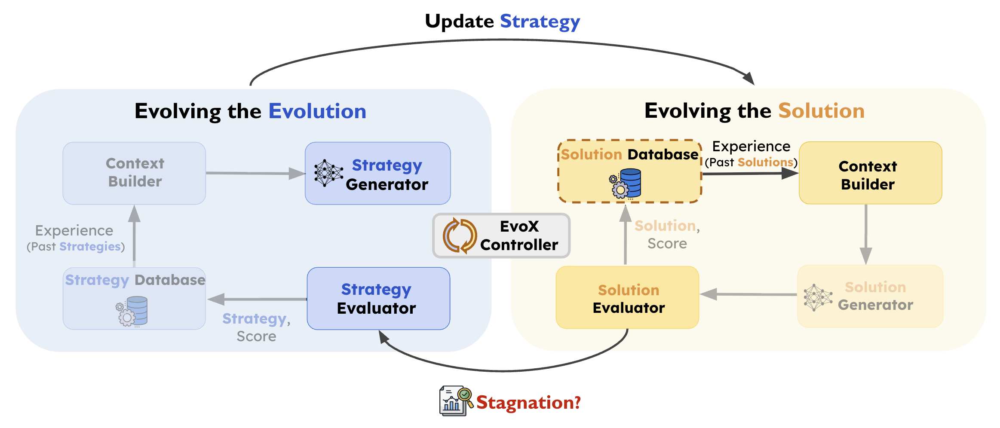
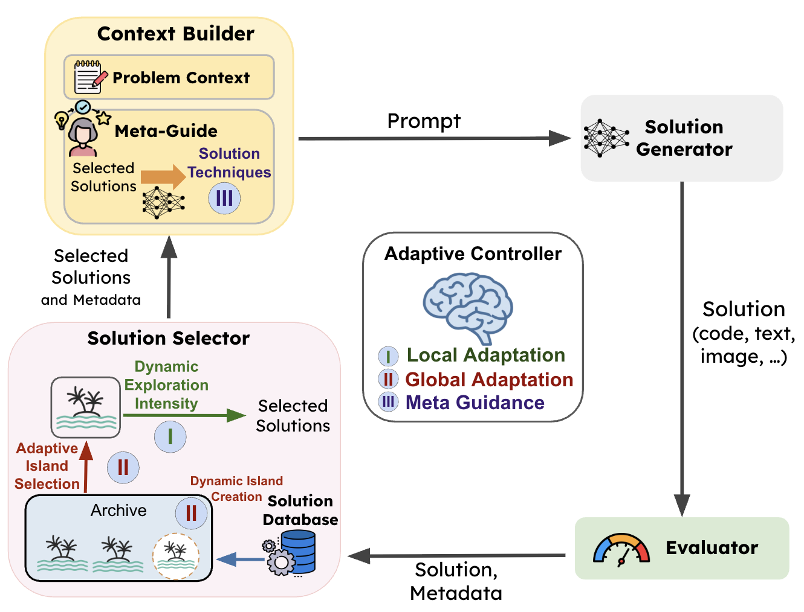
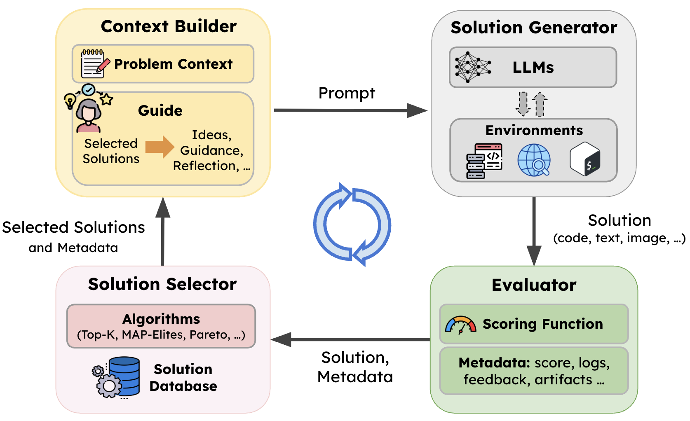

Mar 17, 2026 New
A meta-evolution pipeline that allows AI to evolve its own optimization strategy. Outperforms AlphaEvolve, OpenEvolve, GEPA, and ShinkaEvolve across ~200 diverse tasks.
Read post →
Mar 12, 2026
A hierarchical adaptive algorithm that treats fitness improvement trajectories as a gradient analogue for zeroth-order optimization. SOTA across 185 diverse optimization tasks.
Read post →
Mar 3, 2026
A flexible, modular framework for LLM-driven evolutionary search across 200+ real-world optimization tasks. Achieves SOTA on math, systems, and competitive programming benchmarks.
Read post →